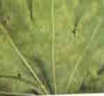

| Home |
| CASTOR |
mAJOR DISEASES |
| 1. Seedling blight |
| 2. Rust |
| 3. Leaf blight |
| 4. Brown leaf spot |
| 5. Powdery mildew |
| 6. Stem rot |
| 7. Bacterial leaf spot |
| 8. Wilt |
| Questions |
| Download Notes |
CASTOR :: MAJOR DISEASE :: POWDERY MILDEW
Powdery mildew - Leveillula taurica
Symptoms
It is characterized by typical mildew growth which is generally confined to the under-surface of the leaf. When the infection is severe the upper-surface is also covered by the whitish growth of the fungus. Light green patches, corresponding to the diseased areas on the under surface, are visible on the upper side especially when the leaves are held against light.
|  |
Powdery mass covering entire leaf |
Management
- When weather is comparatively dry spray twice with wettable Sulphur 2g/lit at 15 days interval, starting from 3 months after sowing.
- Spray 1ml hexaconazole or 2ml dinocap / litre of water at fortnight intervals. The variety Jwala is resistant to this disease.